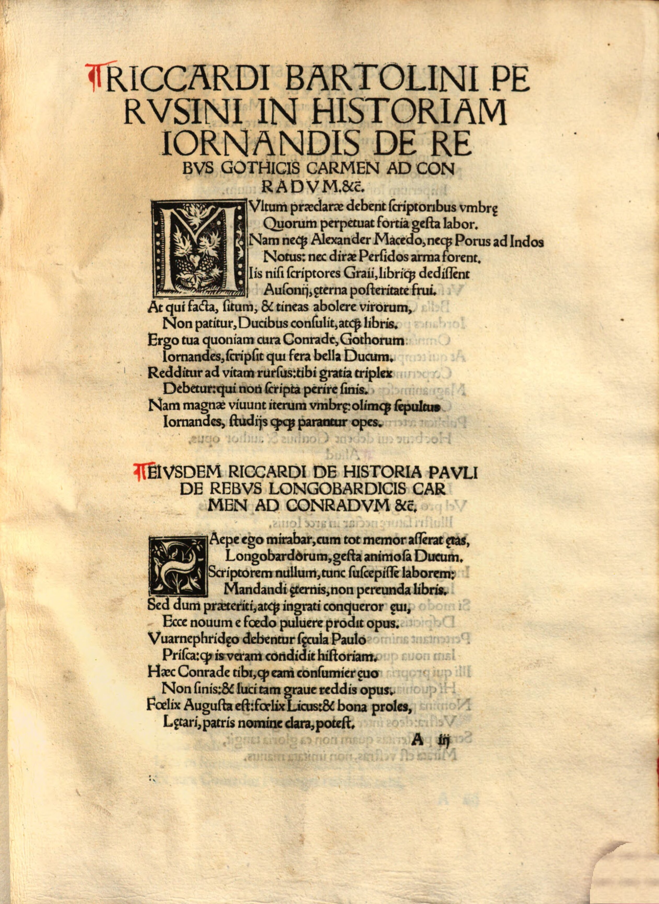

Peutinger 10 (Riccardo Bartolini)
Faksimile

Transkription
Eiusdem Riccardi de historia Pauli de rebus Longobardicis carmen ad Conradum et ceteros.
Saepe ego mirabar, cum tot memor asserat aetas,
Longobardorum, gesta animosa Ducum.
Scriptorem nullum, tunc suscepisse laborem:
Mandandi aeternis, non pereunda libris.
Sed dum praeteriti, atque ingrati conqueror aevi,
Ecce novum e foedo pulvere prodit opus.
Vuarnephridaeo debentur saecula Paulo
Prisca: quod is veram condidit historiam.
Haec Conrade tibi, quod eam consumi aevo
Non sinis et luci tam grave reddis opus.
Felix Augusta est: felix Licus et bona proles,
Laetari, patris nomine clara, potest.
Übersetzung
Ein Lied desselben Riccardo über die Geschichte des Paulus über die Begebenheiten der Langobarden an Konrad und die übrigen.
Oft bewunderte ich, als sich ein Alter einstellte, das sich an so viel erinnert, die mutigen Taten der Anführer der Langobarden. <Und ich wunderte mich, dass>damals kein Schriftsteller die Mühe auf sich genommen habe: Jene Dinge, die nicht untergehen sollen, den ewigen Büchern zu übergeben. Aber während ich <die Geschehnisse> der vergangenen und undankbaren Zeit beklage, siehe, da überliefert sie ein neues Werk aus dem schrecklichen Staub. Verdankt werden die alten Jahrhunderte Paul Warnefried: denn dieser begründete die wahre Geschichte. Diese <wird> dir <verdankt>, Konrad, weil du nicht zulässt, dass sie von der Zeit verzehrt wird und ein so schwerwiegendes Werk <wieder> ans Licht bringst. Augsburg ist glücklich: glücklich ist der Lech und die gute Nachkommenschaft, freuen kann sie sich, die berühmte, über den Namen des Vaters.
Metadaten
| Titel des Gedichts: | Eiusdem Riccardi de historia Pauli de rebus Longobardicis carmen ad Conradum et ceteros. |
| Autor der Gedichts: | Riccardo Bartolini (Riccardus Bartholinus) |
| Containerwerk: | Iordanes, Gotus: De rebus Gothorum et Pauli Warnefridi historia Longobardiae libri, Augsburg 1515 |
| Autor des Containerwerks: | Konrad Peutinger (Conradus Peutinger) |
| Gattung des Containerwerks: | Edition, Edition von De rebus Gothorum des Iordanes, Historiographie |
| Erscheinungsjahr: | 1515 |
| Verschlagwortung: | Geschichte, Langobarden, Rettung vor Vergessen, Buch, Dank, Paulus Diaconus, Wiedergeburt, Wiederauferstehung, Wiederherstellung, Licht, Augsburg, Lech, Nachruhm |